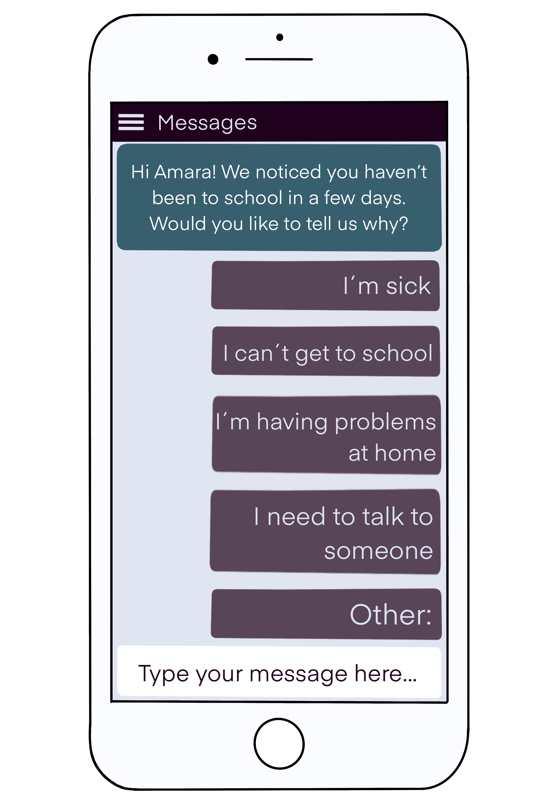
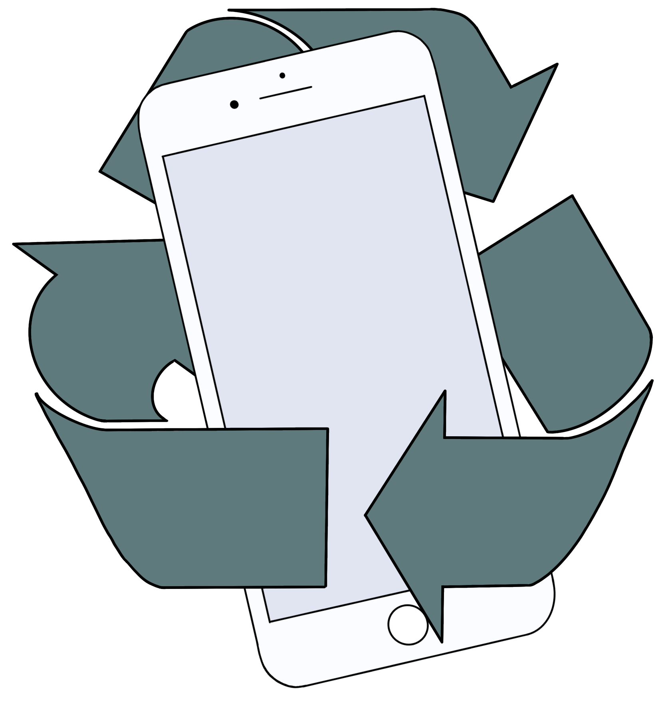

According to UNESCO, only 86% of children in Ethiopia start school. Out of these, there are 61.8% who
do not graduate from primary school.
An astoundishing 1.6 billion children do not attend school - that is an entire generation.
Even before Covid-19, there were 258 million children who did not attent school.
Education is an extremely important part of people's lives, and our goal is that every child is able to attend.
Education contributes to development in the society and better quality of life. Without education, the society moves backwards, and will be forced to start anew.

Our solution
is to create an app that tracks student attendance in Ethiopian primary schools.
In the app, you get an automatic message from your teacher when you've been absent for more than five days in a row.
Here you can choose a reason, or write your own. The template answers help the schools collect reasons for absense, and track absense trends.
The app
is used by all primary schools in Ethiopia, and each student gets their own, personal QR code.
In this QR code, there's information saved about you that contributes to discover absense trends. It has your age, gender and school.
When you get to school in the morning, you scan your own personal QR code in your designated classroom. When your QR code is scanned,
your information is sent to a database that collects data from every school. This way, it is possible to see if your age, gender or school has something to do with your absense.

We plan to recycle used phones from Europe in order to give Ethiopian school children smartphones.
Ethiopia's goal is to have power in the entire country by year 2025.
Google wants to expand the wifi connection across the country, the technology will be available for more students.
Investing in such technology also creates positive repercussions in the entire community.